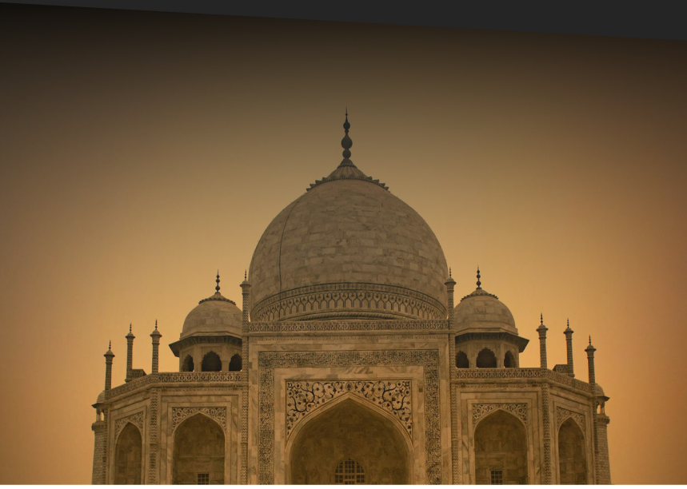
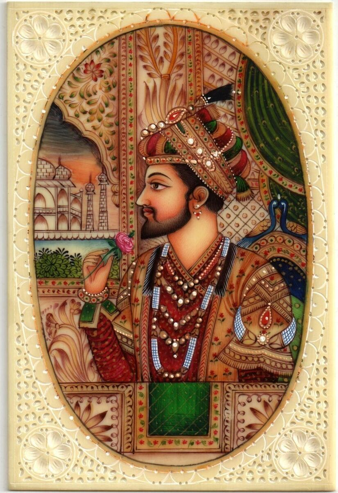
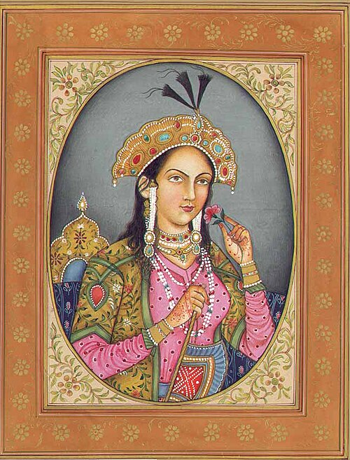

One of the most beautiful mausoleums
in the world...
"The Taj Mahal rises above the banks of the river like a solitary tear suspended on the cheek of time."
Taj Mahal,
The Crown of the Palace...
The Taj Mahal, located in Agra, India, is one of the most iconic monuments in the world. It represents a masterpiece of Mughal architecture, elegantly blending Persian, Ottoman, and Indian influences. Its impressive white marble dome stands at the heart of meticulously landscaped gardens, surrounded by fountains and secondary pavilions. As a UNESCO World Heritage site, the Taj Mahal attracts millions of visitors each year who come to admire its striking beauty and emotional resonance. The monument is as much an architectural jewel as it is a symbol of eternal love. The legend of Shah Jahan building this tomb to honor the memory of Mumtaz Mahal only amplifies the magic surrounding this timeless place.

The Imperial
Couple.
Who are the monarchs at the origin of the mausoleum...

Shah Jahan
5th Emperor of the Moghol Dynasty Reign: 1628 - 1658Born Shahab-ud-din Muhammad Shah Jahan, also known as Shah Jehan or Shahjehan, he was born on January 5, 1592, in Lahore (now Pakistan). The son of Emperor Jahangir and Princess Manmati, he ascended to the throne in 1628 and reigned for three decades marked by the architectural and cultural splendor of the Mughal Empire. His reign is best known for the construction of the Taj Mahal, a sumptuous mausoleum built in Agra in memory of his beloved wife Mumtaz Mahal. It is also where he rests today, following his death on January 22, 1666, at the age of 74. He was succeeded by his son Aurangzeb. Shah Jahan had several wives, including Akbarabadi Mahal, Kandahari Mahal, Hasina Begum Sahiba, Muti Begum Sahiba, Qudsia Begum Sahiba, Fatehpuri Mahal, Sahiba, Sarhindi Begum Sahiba, and Shrimati Manbhavathi Baiji Lal Sahiba—but Mumtaz Mahal remains the eternal love to whom he dedicated one of the wonders of the world.
Mumtaz Mahal
Also named “Exotic Beauty” by the population of IndiaBorn Arjumand Banu Begum in April 1593 in Agra, Mumtaz Mahal is famous not only for her legendary beauty—nicknamed the “Exotic Beauty” by the people of India—but also for the eternal love her husband, Emperor Shah Jahan, had for her.
The daughter of the Persian nobleman Abdul Hasan Asaf Khan, she belonged to the Mughal dynasty by birth and by marriage. Their union was marked by deep affection and a strong bond. She died tragically on June 17, 1631, in Burhanpur, while giving birth to their fourteenth child. Her death plunged the emperor into deep mourning, inspiring the construction of the Taj Mahal, an architectural masterpiece dedicated to her memory.

Famous visitors
Princess Diana
In 1992, Princess Diana was photographed alone in front of the monument, sitting on a marble bench (now known as "Diana's Bench"). She spoke of that moment as:
"A HEALING EXPERIENCE."
Mark Twain
The American writer Mark Twain visited the Taj Mahal at the end of the 19th century and was struck by its majesty.
"YOU CANNOT SAY IT IS BEAUTIFUL, IT DEFIES WORDS."
Rabindranath Tagore
The Nobel laureate poetically described the Taj Mahal as:
"A TEAR ON THE CHEEK OF TIME."